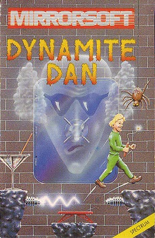
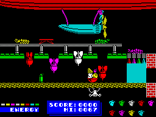
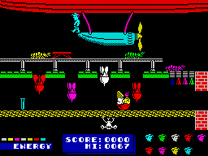

Dynamite Dan


{kind=link}

| Publisher: | Mirrorsoft |
| Price: | £5.95 |
| Year: | 1985 |
| Source: | CRASH, Issue 18 |

Designing elegant graphics so that loads of screens add up to some sort of building, has been all the rage since JSW, but this new Mirrorsoft platform games takes the idea about as far as possible, and features one of the most classically elegant buildings in any game. Dan’s girlfriend (our pre-production copy lacks a scenario) appears to have been locked in the vast safe tucked in the depths of a massive porticoed, pillared mansion inhabited by a variety of unpleasant denizens. Dan arrives on the roof (trendily in time for the new Bond movie) in an airship, descends from it, and commences a mission of rescue. Should you enter the screen containing the safe, you’ll see the girl pacing up and down in frustration and, presumably, in an advancing state of asphyxiation.

The collectable objects in this game are sticks of dynamite (eight needed to blow the safe), a weapon to defend yourself with against the rioting rotters, and food to keep up the energy level that distressed damsel rescuing demands. Food is a relatively simple find — being a wealthy house, there’s plenty lying around, but dynamite tends to hide in very inaccessible places; worse still, it isn’t in the same place each game.
The house is divided up into 48 slightly overlapping screens, six high, eight wide, but they wrap around horizontally, making the building effectively a cylinder. All along the bottom runs a river. This can be negotiated by waiting for a raft to float by, jumping down onto it and keeping up with it by walking at its speed. Falling into the river is quite fatal, unless you have been lucky enough to discover an oxygen bottle somewhere. Above the river is a warren of foliage-lined caves and grottos, gradually mingling with the bowels of the house, pump rooms, boiler rooms, electricity-generator and store rooms. Above these are the commodious living apartments with libraries, bathrooms, dining rooms, sitting rooms and the like. The building is topped off by the roof with its chimneys and classically domed towers.
Different features include trampolines and entire trampoline rooms, tightropes, several teleports and an all-floors lift. Dan himself is a large animated character with a fair-sized jump, which he needs to negotiate the complexities of the house and avoid the numerous nasties, although if he falls too far he loses a life.
And just to add a little extra excitement to solving the puzzle, a nice lady at Mirrorsoft told us that the first person to phone them with the name of the tune played when the airship takes off at the end of the game will win a flight in the Goodyear blimp.
CRITICISM

‘Mirrorsoft have certainly come up in the world with this game, I can remember Caesar the Cat — that had nice graphics and was a start. Obviously this game is going to be compared with JSW but I don’t think it’s fair to do so because the graphics are so much better, more detailed, more colourful, more lively and there’s much more of them — each screen is action packed. Also, this must be the first game that has had continuous tunes (and many of them) as well as normal sound effects — I don’t think it could be bettered. There seems to be more to the game element in this than in JSW as well.
Exploring the rooms is great fun, solving the different ways of how to get at the dynamite to be able to blow the safe is not an easy task, but the game would have no lasting appeal if it was an easy one. You certainly need the ten lives they have given you and even with infinite lives I still haven’t solved the problem of collecting all the dynamite.
Is it addictive? Well I’ve spent a good six hours so far reviewing this game, that speaks for itself when you get to see hundreds in a year. The newly created super-hero Dan is bound to become very popular. (Part of a trilogy of games?) If you had the tiniest inclination to like JSW then you’ll absolutely adore this game — it is much better and has much more content — highly recommended. Brilliant! I must now go and find the rest of the dynamite.’
‘The graphics used in this game are outstanding — a joy to look at. The detail of the buildings and especially the grass and caves is marvellous — it just makes you want to play. The way the screens are laid out is pleasingly logical and there are some nasty traps like the well which goes all the way dooooowwwwn! The arrangement is really a cylinder with a great chasm between the halves of the house, but small platforms, often tiny triangles, do stop you falling to your death in the river.’
‘Mirrorsoft don’t produce many arcade-action games, but certainly the ones they do release are of a pretty high standard. Dynamite Dan has to be one of the most tuneful games I’ve encountered, and it is not surprising to learn that its author, is a musician in his day job. While platform jumping games are regarded as out of fashion in some circles, the overall combination of sound, graphics and effects in this game combine to make it extremely good value entertainment. There’s life in the old genre yet!’
COMMENTS
| Control keys: | Definable |
| Joystick: | Any |
| Keyboard play: | Good |
| Use of colour: | Excellent |
| Graphics: | First class |
| Sound: | Mega-brill |
| Lives: | One |
| Screens: | Nearly fifty |
| General rating: | Superb, value for money game |
| Use of computer: | 95% |
| Graphics: | 96% |
| Playability: | 96% |
| Getting started: | 94% |
| Addictive qualities: | 96% |
| Value for money: | 94% |
| Overall: | 94% |